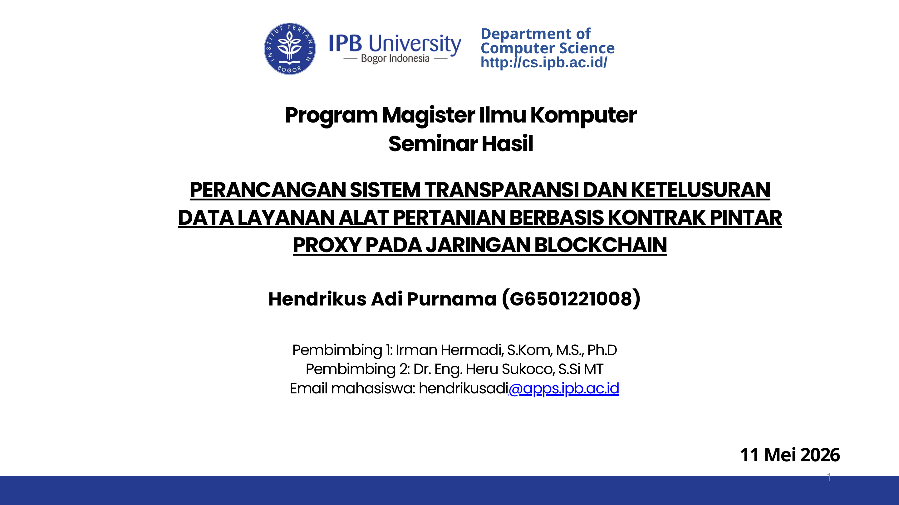
Assalamualaikum warahmatullahi wabarakatuh. Selamat pagi, Bapak, Ibu, dan rekan-rekan sekalian. Perkenalkan, saya Hendrikus Adi Purnama, NIM G6501221008, dari Program Magister Ilmu Komputer IPB University.
Hari ini saya akan menyampaikan hasil penelitian tesis saya — judulnya bisa dilihat langsung di slide. Penelitian ini saya kerjakan di bawah bimbingan Bapak Irman Hermadi dan Bapak Heru Sukoco. Oke, kita mulai.
Kita mulai dari konteks dan masalah yang melatarbelakangi penelitian ini.
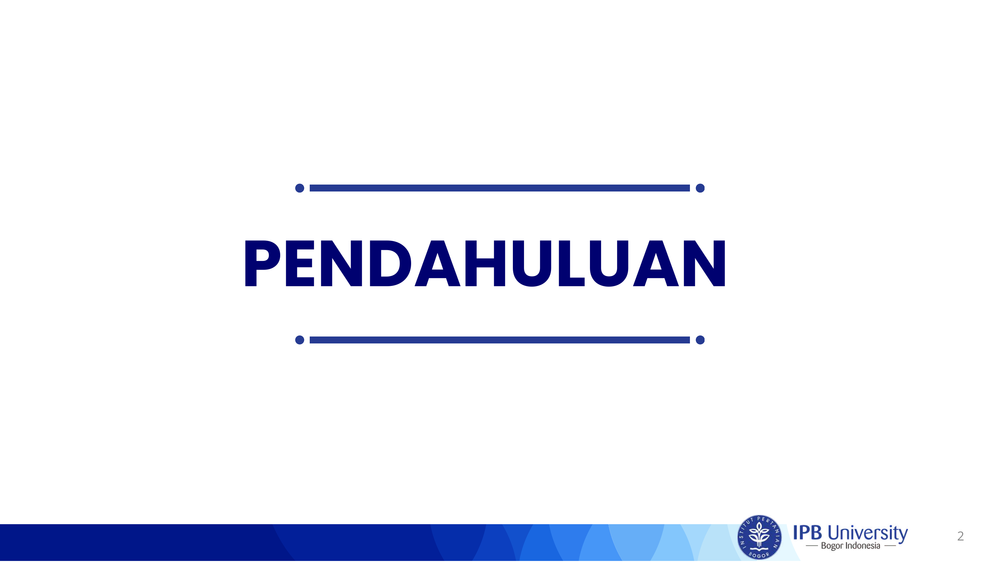
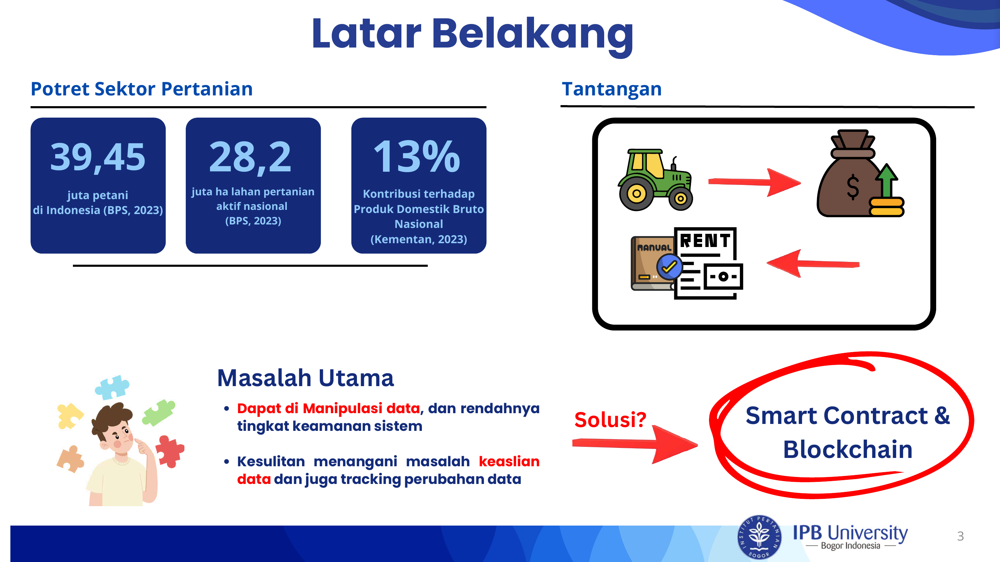
Kita mulai dari gambaran besarnya. Indonesia punya sekitar 39,45 juta petani aktif yang menggarap 28,2 juta hektar lahan — sektor ini menyumbang 13% PDB nasional. Angka yang besar. Tapi di balik angka itu, sebagian besar adalah petani kecil yang menghadapi satu masalah yang sama: tidak punya akses ke alat pertanian modern.
Traktor, pompa irigasi, cultivator — harganya jauh di atas kemampuan petani kecil. Jadi solusinya adalah sewa. Pemerintah pun menjalankan program distribusi alat dan subsidi sewa melalui dinas pertanian — ini didokumentasikan oleh Direktorat Jenderal Prasarana dan Sarana Pertanian, Kementan RI, sebagai salah satu infrastruktur kunci untuk pencapaian target pertanian nasional. Sistem ini sudah berjalan, tapi ada masalah yang tidak bisa diabaikan.
Sistem sewanya tidak transparan. Catatan transaksi tersimpan di satu tempat yang hanya bisa diakses oleh pengelola. Aturan biaya bisa berubah tanpa pemberitahuan. Kalau ada subsidi yang harusnya diterima petani, tidak ada cara untuk memverifikasi apakah sudah disalurkan dengan benar atau tidak. Dengan kata lain, tidak ada rekam jejak yang bisa dipercaya oleh semua pihak sekaligus.
Dari situlah penelitian ini berangkat. Pertanyaannya: bisa tidak kita bangun sistem layanan alat pertanian di mana setiap transaksi tercatat secara permanen, tidak bisa dimanipulasi siapa pun, dan bisa diverifikasi kapan saja oleh petani, penyedia, maupun pengawas dari dinas? Jawaban yang kami usulkan adalah: smart contract di atas jaringan blockchain.
Tapi sebelum kita masuk ke sistem, kita perlu samakan pemahaman dulu — apa sebenarnya blockchain dan smart contract itu?
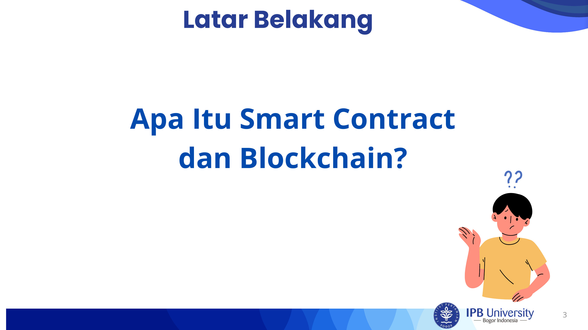
Sebelum kita lanjut, ada satu pertanyaan yang perlu kita jawab bersama: apa sebenarnya blockchain dan smart contract itu?
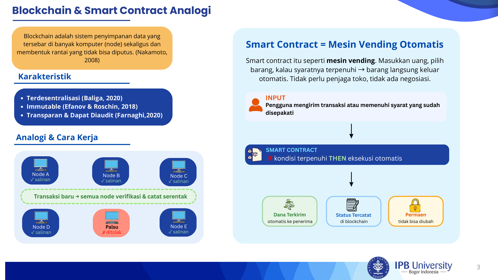
Secara teori, blockchain adalah sistem penyimpanan data terdistribusi berbasis jaringan peer-to-peer yang bersifat trustless — tidak memerlukan pihak ketiga yang dipercaya (Nakamoto 2008). Tiga karakteristik utamanya: terdesentralisasi — data tersebar di ribuan node, tidak ada yang pegang kendali tunggal (Baliga 2020); immutable — data yang sudah masuk tidak bisa diubah (Efanov & Roschin 2018); dan transparan — siapa pun bisa verifikasi kapan saja tanpa izin (Farnaghi 2020).
Agar lebih mudah dibayangkan — blockchain seperti buku catatan bersama yang salinannya dipegang ribuan orang sekaligus. Setiap catatan baru langsung tersebar ke semua, dan tidak ada satu pun yang bisa mengubah catatan lama tanpa semua orang tahu.
Di atas blockchain itu, ada yang namanya smart contract — program yang berjalan otomatis ketika kondisi terpenuhi, tanpa perantara (Buterin 2014; Mohanta et al. 2018). Analoginya seperti mesin vending otomatis: masukkan uang, pilih barang — kalau syarat terpenuhi, barang langsung keluar sendiri, tanpa penjaga toko, tanpa negosiasi. Di sistem ini: petani kirim transaksi → smart contract periksa syarat → jika terpenuhi, dana dikunci dan status sewa tercatat permanen di blockchain.
Nah, sekarang kita sudah paham apa itu blockchain. Lalu, apa konkretnya yang berbeda antara sistem biasa dan sistem berbasis blockchain ini?
| Aspek | ⚠ Sistem Biasa | ✔ Berbasis Blockchain |
|---|---|---|
| Penyimpanan | Satu server, satu pihak yang pegang | Tersebar di ribuan node, tidak ada pemilik tunggal |
| Bisa diubah? | Bisa — siapa pun yang punya akses admin | Tidak bisa — data yang masuk langsung permanen |
| Aturan biaya | Tersembunyi di server, tidak bisa dicek | Terbuka di blockchain, siapa pun bisa verifikasi |
| Distribusi dana | Manual oleh pengelola, rawan telat atau salah | Otomatis oleh smart contract, langsung saat syarat terpenuhi |
| Rekam jejak | Bisa dihapus atau dimanipulasi | Permanen, tidak bisa dihapus, bisa diaudit kapan saja |
| Kepercayaan | Harus percaya pada orang / institusi | Percaya pada kode — tidak butuh perantara |
Kalau kita bandingkan langsung, perbedaan paling mendasar ada di siapa yang memegang kendali. Di sistem biasa, semua data tersimpan di satu server milik satu pihak — artinya pihak itu bisa ubah data, hapus rekam jejak, atau atur distribusi dana sesukanya. Kita tidak punya cara untuk verifikasi apakah itu benar atau tidak.
Di sistem berbasis blockchain, tidak ada satu pihak pun yang pegang kendali penuh. Data tersebar, aturan biaya terbuka untuk dibaca siapa saja, dana didistribusikan otomatis oleh kode — bukan oleh manusia — dan setiap transaksi yang sudah tercatat tidak bisa dihapus atau diubah.
Analoginya gampang: sistem biasa itu seperti rekening bank — kita harus percaya bank tidak salah catat. Blockchain itu seperti buku kas koperasi yang salinannya dipegang semua anggota sekaligus — tidak ada yang bisa ubah tanpa semua tahu.
Tapi blockchain sendiri pun tidak sempurna. Smart contract konvensional masih punya keterbatasan yang perlu kita atasi — dan itu yang menjadi inti masalah penelitian ini.
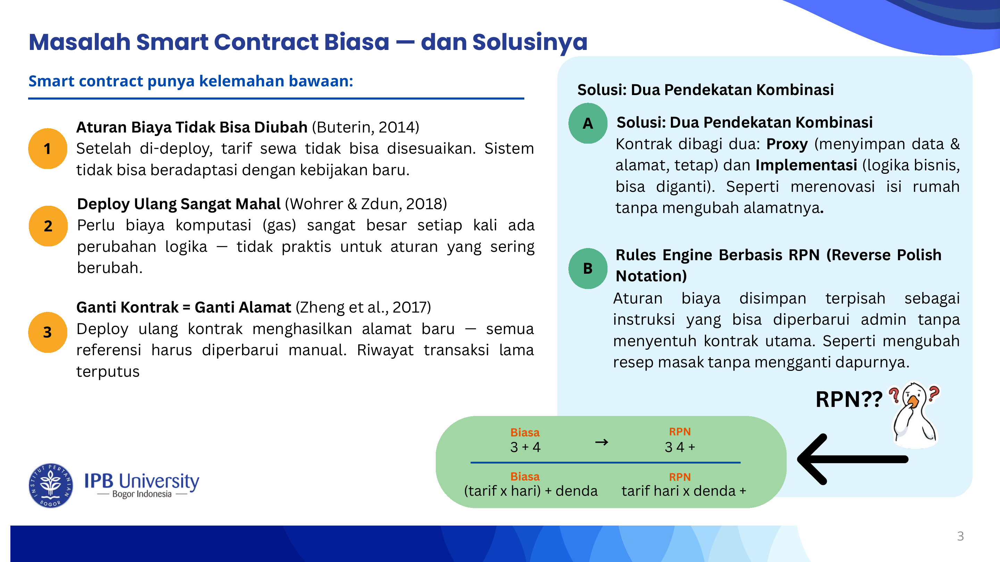
Meski blockchain menjanjikan, smart contract konvensional punya tiga kelemahan yang relevan. Pertama, aturan biaya tidak bisa diubah setelah kontrak dipasang — bayangkan peraturan yang dicetak permanen di papan, tidak bisa diganti tanpa buang papannya. Kedua, kalau aturan mau diubah, harus pasang kontrak baru dari awal dengan "alamat" berbeda — semua riwayat transaksi lama ikut terputus. Ketiga, memasang ulang kontrak itu sangat mahal secara komputasi — inilah yang nanti kita buktikan dengan angka gas.
Penelitian ini mengusulkan dua solusi. Solusi A — pola Factory-Proxy: kontrak bisa diperbarui isinya tanpa ganti alamat, seperti merenovasi isi rumah tanpa pindah ke alamat baru. Solusi B — Rules Engine berbasis RPN: aturan biaya tersimpan sebagai instruksi yang bisa diperbarui kapan saja. Contoh sederhana: dalam penulisan biasa "3 + 4 = 7", dalam RPN ditulis "3 4 +" — angkanya dulu, baru operator di belakang.
Dari ketiga masalah dan dua solusi ini, kita bisa merumuskan pertanyaan penelitian yang lebih spesifik.
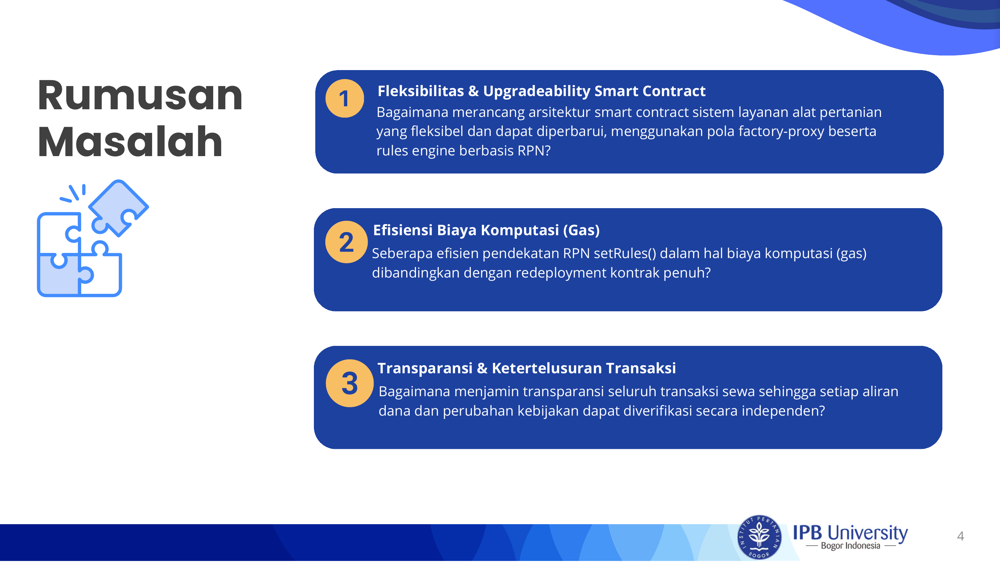
Dari latar belakang tersebut, penelitian ini merumuskan tiga pertanyaan utama. Pertama: bagaimana merancang arsitektur smart contract yang fleksibel dan dapat diperbarui menggunakan pola factory-proxy EIP-1967? Kedua: seberapa efisien pendekatan RPN setRules() dalam hal biaya komputasi atau gas dibandingkan redeployment kontrak penuh? Ketiga: bagaimana menjamin transparansi dan ketertelusuran seluruh transaksi sewa yang dapat diverifikasi secara independen?
Dari tiga pertanyaan itu, kita turunkan tiga tujuan yang hendak dicapai dalam penelitian ini.
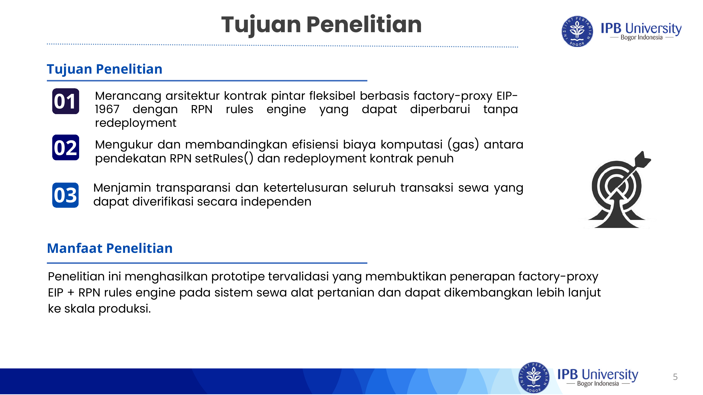
Tujuan penelitian ini ada tiga, menjawab langsung rumusan masalah tadi: satu, merancang arsitektur kontrak pintar berbasis factory-proxy EIP-1967 dengan RPN rules engine yang dapat diperbarui tanpa redeployment; dua, mengukur dan membandingkan efisiensi biaya komputasi antara RPN setRules() dan redeployment kontrak penuh; tiga, menjamin transparansi dan ketertelusuran transaksi sewa yang dapat diverifikasi secara independen.
Manfaat penelitian: penelitian ini menghasilkan prototipe tervalidasi yang membuktikan penerapan factory-proxy EIP-1967 dan RPN rules engine pada sistem sewa alat pertanian, dan dapat dikembangkan lebih lanjut ke skala produksi.
Kita sudah tahu apa yang ingin dicapai. Sekarang, bagaimana cara kita mencapainya? Mari masuk ke pendekatan metode penelitian.
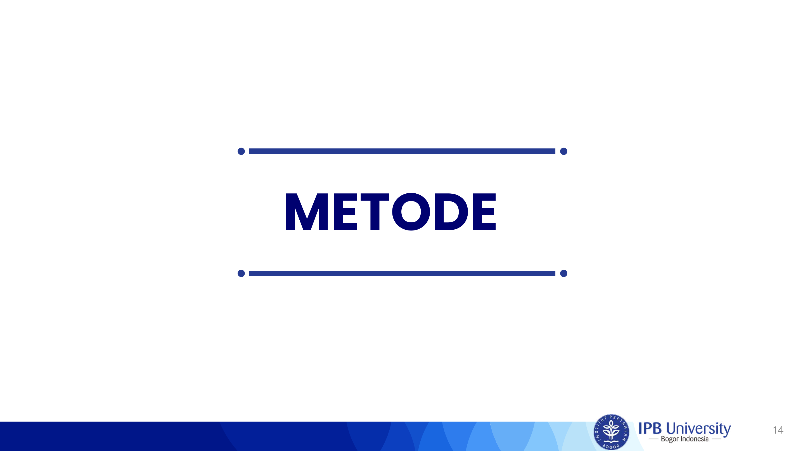
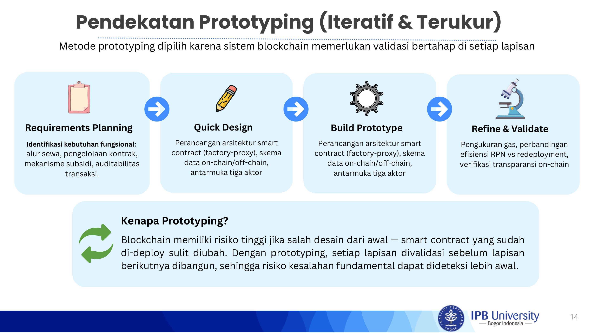
Penelitian ini menggunakan metode prototyping, dengan empat tahap iteratif. Requirements Planning — identifikasi kebutuhan fungsional: alur sewa, pengelolaan kontrak, auditabilitas transaksi. Quick Design — perancangan arsitektur smart contract factory-proxy dan skema data on-chain/off-chain. Build Prototype — implementasi iteratif dari smart contract Solidity, backend Node.js, hingga frontend React dengan MetaMask. Refine and Validate — pengukuran gas, perbandingan efisiensi, verifikasi transparansi on-chain.
Kenapa prototyping? Karena blockchain memiliki risiko tinggi jika salah desain dari awal — smart contract yang sudah di-deploy sangat sulit diubah. Dengan validasi berlapis di setiap tahap, kesalahan fundamental bisa dideteksi lebih awal sebelum terlanjur ke lapisan berikutnya.
Dengan empat tahap prototyping itu, kita masuk ke bagian hasil. Dan yang pertama adalah rancangan use case — siapa saja yang terlibat dan apa yang mereka lakukan dalam sistem ini.
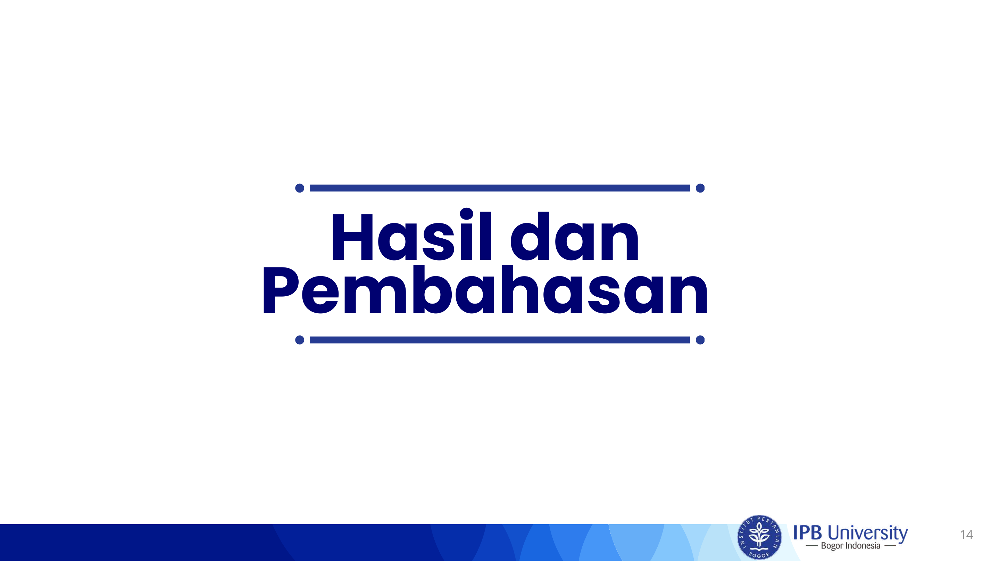
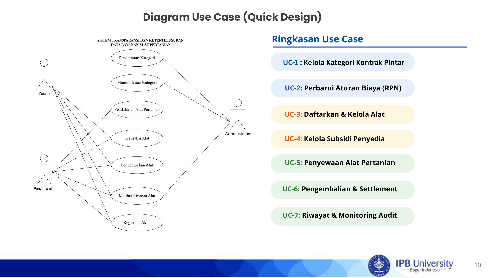
Sistem ini melibatkan tiga aktor dengan tujuh use case. Admin mengelola kategori kontrak pintar (UC-1) dan memperbarui aturan biaya berbasis RPN (UC-2). Penyedia Alat mendaftarkan dan mengelola alat (UC-3) serta mengelola subsidi penyedia (UC-4). Petani melakukan penyewaan alat pertanian (UC-5) dan pengembalian beserta settlement dana (UC-6). Semua aktor bisa mengakses riwayat dan monitoring audit on-chain (UC-7).
Yang membedakan dari sistem konvensional: UC-1 (perubahan aturan biaya), UC-3 (registrasi alat), UC-5 (sewa), dan UC-6 (pengembalian & settlement) semua berinteraksi langsung dengan smart contract — tercatat permanen dan bisa diverifikasi siapa saja secara independen.
Setelah kita tahu siapa yang terlibat dan apa yang mereka lakukan, sekarang kita lihat bagaimana arsitektur teknisnya dirancang untuk mendukung semua itu.
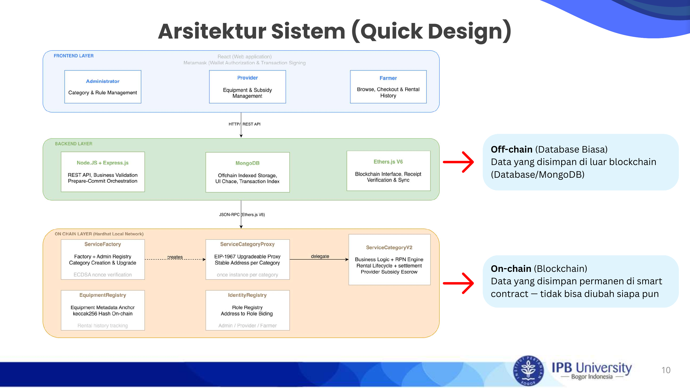
Arsitektur sistem ini terbagi tiga lapisan. Lapisan frontend: React + MetaMask, dapat diakses oleh tiga jenis pengguna — Admin, Penyedia, dan Petani. MetaMask berfungsi sebagai dompet digital untuk menandatangani transaksi ke blockchain.
Lapisan backend: Node.js + Express dengan MongoDB dan Ethers.js V6. Ini adalah lapisan off-chain — menerima request dari frontend dan menyimpan salinan data untuk performa UI. Tetapi ini bukan sumber kebenaran utama.
Lapisan on-chain: lima smart contract yang saling terhubung — ServiceFactory (pusat manajemen + registry admin), ServiceCategoryProxy (alamat tetap, upgradeable), ServiceCategoryV2 (logika bisnis + RPN rules engine), EquipmentRegistry (anchor metadata alat), dan IdentityRegistry (manajemen identitas dan peran).
Prinsip kunci: smart contract adalah sumber kebenaran utama. MongoDB hanya cache untuk kenyamanan UI — jika database dimanipulasi, data on-chain tetap bisa diverifikasi siapa saja secara independen.
Kenapa dipisah antara on-chain dan off-chain? Karena membaca data dari blockchain itu lambat dan mahal jika dilakukan untuk setiap tampilan UI. Bayangkan setiap kali halaman daftar alat dibuka, harus query ribuan blok — itu tidak efisien. Jadi MongoDB dipakai untuk kecepatan tampilan, tapi untuk hal-hal kritis seperti settle dana dan verifikasi aturan, tetap mengacu ke on-chain.
Arsitektur ini kemudian kita wujudkan dalam prototipe nyata. Mari kita lihat tampilan aplikasinya.
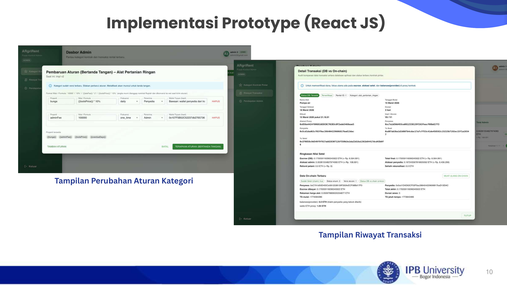
Prototipe diimplementasikan menggunakan React JS. Di sisi kiri, tampilan perubahan aturan kategori — admin bisa memperbarui aturan biaya melalui antarmuka visual yang langsung mengirim transaksi ke smart contract. Di sisi kanan, tampilan riwayat transaksi — menampilkan perbandingan data database dan data on-chain secara berdampingan, memungkinkan admin memverifikasi konsistensinya.
Salah satu fitur kunci yang tadi ada di tampilan kiri adalah perubahan aturan biaya via smart contract. Mari kita lihat lebih detail bagaimana itu bekerja.
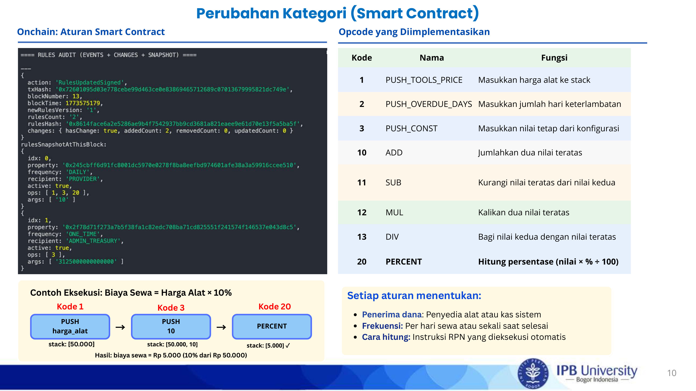
Inilah bukti nyata fleksibilitas sistem. Di terminal, kita bisa lihat event RulesUpdatedSigned — setiap kali aturan biaya diperbarui, smart contract memancarkan event ini yang tercatat permanen di blockchain.
Aturan biaya ditulis dalam format RPN — cara ringkas menyimpan instruksi perhitungan di dalam smart contract. Contoh konkret: untuk menghitung biaya 10% dari harga alat Rp 50.000 — instruksinya hanya tiga langkah: ambil harga alat → ambil angka 10 → hitung persentase. Hasilnya: 10% × Rp 50.000 = Rp 5.000. Instruksi tiga langkah ini bisa diganti kapan saja — misalnya diubah jadi 15% saat musim panen — tanpa perlu pasang ulang kontrak dari awal.
Selain bukti fleksibilitas, kita juga punya bukti transparansi — data sewa yang tersimpan on-chain dan bisa diakses siapa saja. Sekaligus, kita ukur berapa biaya komputasinya.
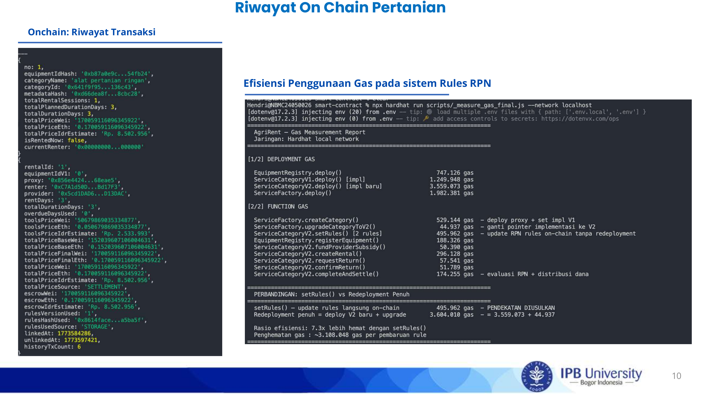
Di sisi kiri, data sewa yang tersimpan on-chain — dalam format JSON yang bisa diakses dan diverifikasi siapa saja tanpa perlu akses ke database. Ini adalah bukti transparansi: rentalId, toolId, alamat petani, status, biaya total — semua tercatat permanen.
Di sisi kanan, hasil pengukuran gas. RPN setRules() mengonsumsi 495.962 gas. Redeployment kontrak penuh mengonsumsi 3.604.010 gas. Rasio: 7,3 kali lebih hemat. Angka ini bukan estimasi — ini hasil pengukuran langsung dari eksekusi di jaringan Hardhat.
Angka-angka itu kita rangkum dalam tabel perbandingan lengkap agar gambarannya lebih utuh.
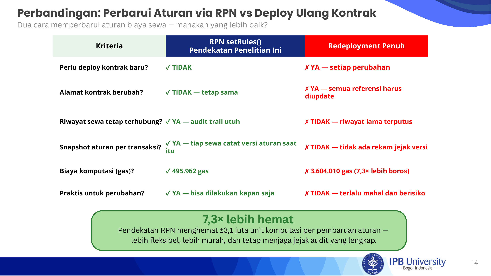
Ini adalah perbandingan lengkap antara dua pendekatan. Dengan RPN setRules(): tidak perlu deploy kontrak baru, alamat tetap sama, riwayat sewa tetap terhubung, setiap transaksi menyimpan snapshot versi aturan saat itu, biaya 495.962 gas, dan praktis untuk perubahan rutin.
Dengan redeployment: setiap perubahan kebijakan butuh kontrak baru dengan alamat baru, semua referensi harus diupdate manual, riwayat lama terputus, tidak ada rekam jejak versi, biaya 3.604.010 gas, dan tidak praktis karena terlalu mahal dan berisiko.
Kesimpulan visual: 7,3 kali lebih hemat — ini kontribusi terukur penelitian ini.
Dan ini bukan sekadar angka. Dalam konteks sistem yang aturannya bisa berubah-ubah — misalnya tarif sewa naik musim panen, atau ada kebijakan diskon dari dinas — kemampuan memperbarui aturan dengan biaya rendah tanpa mengorbankan transparansi adalah nilai nyata yang ditawarkan arsitektur ini.
Dengan semua hasil pengukuran itu, kita bisa menarik kesimpulan yang menjawab langsung ketiga tujuan penelitian.
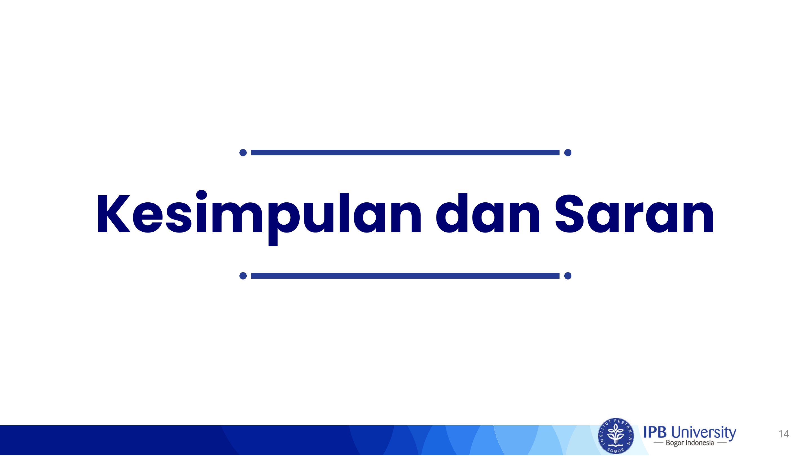
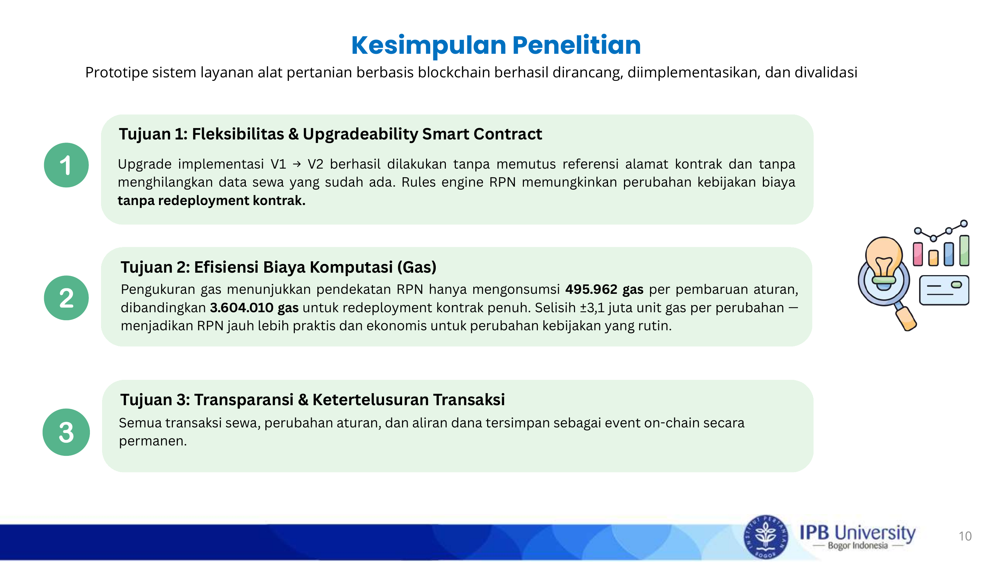
Penelitian ini berhasil merancang, mengimplementasikan, dan memvalidasi prototipe sistem dengan tiga kesimpulan yang menjawab langsung tujuan penelitian.
Tujuan pertama: fleksibilitas dan upgradeability. Terbukti. Pola factory-proxy EIP-1967 berhasil diterapkan — upgrade dari V1 ke V2 berhasil dilakukan tanpa memutus referensi alamat kontrak dan tanpa menghilangkan data sewa yang sudah ada. RPN rules engine memungkinkan perubahan kebijakan kapan saja tanpa redeployment.
Tujuan kedua: efisiensi biaya komputasi atau gas. Terbukti. Pengukuran menunjukkan RPN setRules() hanya mengonsumsi 495.962 gas, dibandingkan 3.604.010 gas untuk redeployment penuh — 7,3 kali lebih hemat. Ini menjawab secara kuantitatif bahwa RPN jauh lebih praktis untuk perubahan kebijakan yang rutin.
Tujuan ketiga: transparansi dan ketertelusuran transaksi. Terbukti. Semua transaksi sewa, perubahan aturan, dan aliran dana tercatat sebagai event on-chain yang dapat diverifikasi siapa saja secara independen. Setiap sewa menyimpan snapshot versi aturan saat itu — audit trail historis tetap utuh meskipun aturan berubah.
Sebagai penelitian prototipe, tentu ada ruang yang bisa dikembangkan lebih lanjut. Ini sarannya.
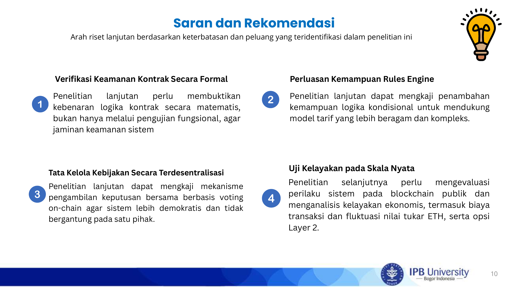
Sebagai saran pengembangan ke depan, ada empat arah: verifikasi keamanan formal agar jaminan keamanan kontrak dapat dibuktikan secara matematis; perluasan rules engine untuk mendukung logika kondisional yang lebih kompleks; tata kelola terdesentralisasi berbasis voting on-chain agar tidak bergantung pada satu admin; dan uji kelayakan di jaringan publik termasuk opsi Layer 2 seperti Polygon atau Arbitrum.
Sebelum sesi tanya jawab, inilah seluruh referensi yang menjadi landasan penelitian ini.
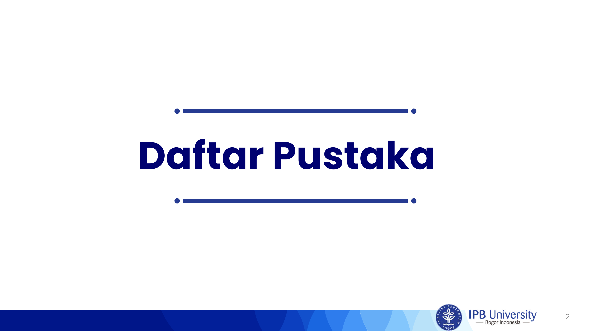
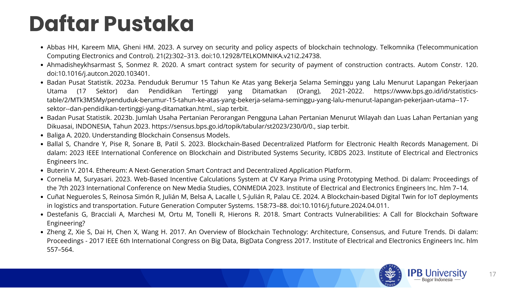
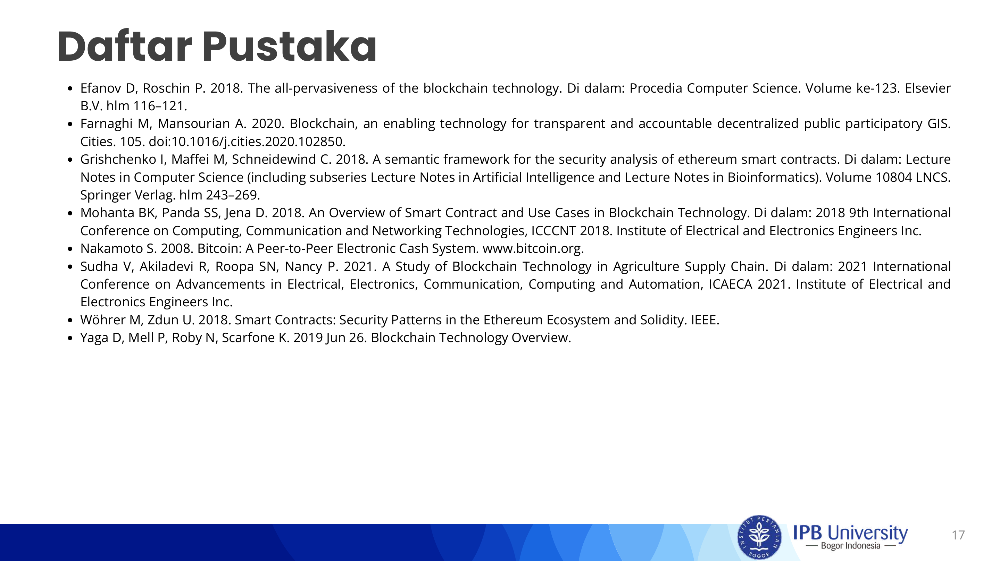
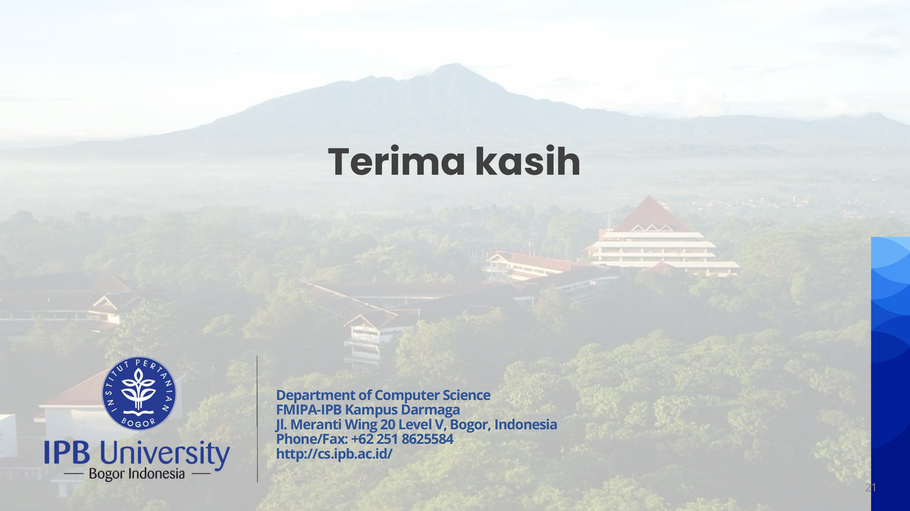
Demikian presentasi seminar hasil dari saya. Saya ucapkan terima kasih kepada Bapak Irman Hermadi dan Bapak Heru Sukoco selaku pembimbing, serta kepada seluruh dosen penguji atas waktu dan perhatiannya. Saya siap menerima pertanyaan dan masukan.
| Bagian | Slide PPT | Estimasi |
|---|---|---|
| Cover | Slide 1 | 30 detik |
| Pendahuluan | Slide 2–9 | 6 menit |
| Metode | Slide 10–11 | 1 menit |
| Hasil dan Pembahasan | Slide 12–18 | 8 menit |
| Kesimpulan & Saran | Slide 19–21 | 2 menit |
| Daftar Pustaka + Penutup | Slide 22–25 | 15 detik |
| TOTAL | 25 slide | ~15–17 menit |
Kalau dilihat dari tampilan, memang mirip aplikasi sewa biasa — ada daftar alat, ada tombol sewa, ada riwayat transaksi. Bedanya ada di bagian yang tidak kelihatan: di balik layar, setiap transaksi dicatat ke blockchain, bukan ke database milik satu pihak.
Analoginya: aplikasi sewa biasa seperti nota dari toko yang bisa diubah oleh tokonya. Sistem ini seperti akta notaris yang sudah didaftarkan — tidak bisa diubah siapa pun, dan siapa saja bisa verifikasi keasliannya kapan saja.
Ini salah satu karakteristik blockchain yang perlu dipahami: transaksi yang sudah masuk ke blockchain tidak bisa dihapus atau dibatalkan. Data bersifat permanen dan immutable.
Tapi bukan berarti tidak ada solusi jika ada kesalahan. Sistem ini punya mekanisme reject return — penyedia bisa menolak pengembalian jika kondisi alat tidak sesuai, dan ada alur konfirmasi sebelum dana diselesaikan. Jadi transaksi dirancang berlapis agar kesalahan bisa dicegah sebelum terjadi, bukan dibatalkan setelah terjadi.
Pertanyaan yang sangat relevan. Admin memang bisa mengubah aturan biaya — tapi ada dua pembatas yang penting. Pertama, perubahan aturan hanya berlaku untuk transaksi sewa baru, bukan yang sudah terjadi. Jadi petani yang sudah menyewa tidak bisa tiba-tiba kena tarif baru. Kedua, setiap perubahan aturan tercatat permanen di blockchain sebagai event yang bisa dilihat siapa saja — jadi kalau admin tiba-tiba ubah tarif tidak wajar, itu langsung terlihat di riwayat on-chain.
Transparansi blockchain itulah yang jadi pengawasnya — bukan kepercayaan ke orangnya.
Ini keterbatasan yang sudah saya akui dalam penelitian. Sistem ini dirancang sebagai prototipe berbasis web yang membutuhkan browser dan MetaMask — belum dirancang untuk penggunaan offline atau tanpa smartphone.
Dalam konteks nyata, sistem ini lebih relevan untuk dioperasikan oleh operator desa atau petugas dari dinas pertanian yang sudah melek teknologi, bukan langsung oleh petani. Petani tetap bisa menikmati manfaatnya — transparansi dan ketepatan distribusi dana — tanpa harus mengoperasikan sistemnya sendiri. Pengembangan antarmuka mobile yang lebih sederhana menjadi saran penelitian lanjutan.
"Pertanyaan ini sangat tepat, dan saya akui ini adalah keterbatasan nyata dari prototipe ini."
Anda benar — petani di lapangan, terutama petani kecil di desa, tidak bisa langsung menggunakan sistem ini sendiri. Untuk memakai MetaMask, seseorang harus bisa membuat wallet, menyimpan seed phrase dengan aman, dan tahu cara top-up ETH. Itu bukan hal yang bisa diasumsikan bisa dilakukan oleh petani yang mayoritas tingkat literasi digitalnya masih rendah.
Tapi ada tiga hal yang perlu diluruskan:
Pertama — ini adalah prototipe arsitektur, bukan produk akhir. Kontribusi penelitian ini ada di lapisan teknis: membuktikan bahwa arsitektur factory-proxy dengan RPN rules engine bisa berjalan, transparan, dan efisien. Siapa yang nantinya mengoperasikannya adalah pertanyaan implementasi, bukan pertanyaan arsitektur.
Kedua — model yang realistis bukan petani pakai sendiri, tapi melalui operator. Dalam program distribusi bantuan pemerintah, ada petugas lapangan dari dinas pertanian atau koperasi yang bertugas mendampingi petani. Petugas inilah yang mengoperasikan sistem — petani hanya perlu hadir, mengkonfirmasi secara verbal, dan menerima bukti transaksi. Ini mirip model BRI Link atau Pos Giro — petani tidak perlu buka aplikasi bank sendiri, ada agen yang membantu.
Ketiga — masalah ETH bisa diselesaikan di layer implementasi. Di jaringan publik, biaya transaksi bisa ditanggung oleh operator atau dinas (gas sponsorship). Ada mekanisme namanya meta-transaction atau gasless transaction di mana biaya gas dibayarkan oleh pihak ketiga, bukan pengguna akhir. Petani tidak perlu punya ETH sama sekali.
Jadi keterbatasan ini nyata untuk penggunaan langsung oleh petani, tapi bukan hambatan fundamental untuk penerapan dengan model operasional yang tepat.
Di prototipe ini, transaksi memang menggunakan ETH karena sistemnya berjalan di jaringan Ethereum — dan ETH adalah "bahan bakar" yang dibutuhkan untuk menjalankan smart contract. Tapi ini bukan hambatan fundamental.
Di implementasi nyata, ada beberapa solusi: bisa menggunakan stablecoin seperti USDT atau IDRX yang nilainya dikaitkan ke rupiah, atau menggunakan Layer 2 blockchain dengan biaya sangat murah. Yang terpenting dari penelitian ini bukan mata uangnya, tapi arsitekturnya — bagaimana smart contract bisa mengeksekusi aturan secara otomatis dan transparan.
Manfaat langsungnya ada tiga. Satu, petani bisa tahu persis berapa biaya yang akan dikenakan sebelum menyewa — karena aturan biaya tercatat on-chain dan bisa dilihat siapa saja, tidak ada biaya tersembunyi atau perubahan mendadak. Dua, jika ada program subsidi dari pemerintah, distribusinya bisa diaudit secara transparan — siapa yang dapat, berapa, kapan — tanpa bisa dimanipulasi. Tiga, riwayat sewa yang permanen bisa menjadi modal rekam jejak untuk akses kredit atau program bantuan berikutnya.
Smart contract tidak punya parser teks bawaan — mengurai string formula di dalam EVM sangat mahal gas-nya dan rawan bug. RPN dipilih karena operasinya berbasis stack yang sederhana: baca opcode satu per satu, push atau pop nilai, selesai. Tidak perlu parser, tidak perlu rekursi, tidak perlu operator precedence — kontrak tinggal iterasi array opcode dari kiri ke kanan.
Hasilnya deterministik dan dapat diaudit — siapa saja bisa baca array opcode di blockchain dan hitung ulang hasilnya secara manual.
EIP-1967 adalah standar yang menetapkan di slot penyimpanan mana alamat implementasi disimpan di dalam proxy. Dengan slot yang sudah distandardisasi, tools seperti Etherscan bisa otomatis mendeteksi bahwa sebuah kontrak adalah proxy — tanpa perlu konfigurasi manual. EIP-1822 (UUPS) adalah varian di mana logika upgrade ada di implementasi, bukan di proxy. EIP-1967 dipilih karena lebih mature, lebih banyak digunakan di ekosistem OpenZeppelin, dan lebih mudah diverifikasi oleh tools eksternal.
Rules engine ini hanya bisa diubah oleh admin yang sudah terverifikasi melalui mekanisme ECDSA signature. Opcode yang tersedia juga terbatas — hanya opcode 1–20 yang sudah didefinisikan, tidak ada opcode untuk akses storage sembarangan atau call ke kontrak lain. Jadi attack surface-nya kecil.
Yang perlu dicatat: kepercayaan di sini bukan pada kontraknya, tapi pada transparansinya. Kalau admin memasang aturan yang tidak wajar, siapa saja bisa membaca opcode-nya langsung dari blockchain dan memverifikasi apakah aturan itu masuk akal.
MongoDB dipilih karena data dari blockchain berbentuk event dan struct yang skemanya bisa berubah — misalnya field RPN rules bisa memiliki jumlah opcode yang berbeda-beda. Document-based storage lebih fleksibel untuk menyimpan struktur seperti ini tanpa perlu migrasi skema. Selain itu, karena MongoDB bukan sumber kebenaran utama (hanya cache), konsistensi ACID tidak menjadi prioritas utama — yang penting fast read untuk UI.
Nilai gas di Hardhat valid untuk perbandingan relatif karena semua fungsi diukur dalam kondisi yang sama — EVM version, compiler settings, dan input yang identik. Yang tidak bisa diukur di Hardhat adalah biaya aktual dalam rupiah/ETH, karena itu bergantung pada gas price di jaringan publik yang fluktuatif.
Jadi kesimpulan "7,3 kali lebih hemat" tetap valid karena itu perbandingan gas unit, bukan perbandingan biaya dalam mata uang. Pengujian di testnet publik untuk mendapatkan data biaya aktual menjadi saran penelitian lanjutan.
Sistem menggunakan pola prepare-commit dua tahap. Backend menyiapkan parameter transaksi dan menyimpan status "pending" di MongoDB terlebih dahulu. Lalu frontend mengirim transaksi ke MetaMask. Setelah transaksi dikonfirmasi di blockchain, frontend mengirim txHash ke backend, dan backend memperbarui status MongoDB berdasarkan data on-chain yang sudah final.
Jika transaksi gagal di blockchain (misalnya reverting), status MongoDB tetap "pending" dan admin bisa melihat inkonsistensi ini. Karena MongoDB hanya cache, sumber kebenaran tetap on-chain — data yang ada di MongoDB bisa selalu direkonstruksi ulang dari event blockchain jika diperlukan.
"Pertanyaan yang sangat bagus, Pak/Bu."
Betul bahwa database konvensional lebih murah dan lebih mudah dibangun. Tapi ada satu masalah fundamental yang tidak bisa diselesaikan database biasa: kepercayaan.
Di database biasa, siapa pun yang memegang akses admin bisa mengubah catatan tanpa bisa dideteksi — dan itulah persis masalah yang terjadi di sistem sewa alat pertanian konvensional. Petani tidak punya cara untuk membuktikan kalau aturan biaya diubah sepihak setelah transaksi terjadi.
Blockchain menyelesaikan ini bukan dengan kecanggihan teknologinya, tapi dengan satu properti sederhana: data yang sudah masuk tidak bisa diubah oleh siapa pun — termasuk admin sistem sendiri. Ini yang membuat transaksi bisa dipercaya tanpa harus percaya pada satu pihak tertentu.
Jadi pilihannya bukan "blockchain vs database" — tapi "sistem yang bisa dipercaya secara teknis vs sistem yang harus dipercaya secara sosial." Untuk konteks sewa alat pertanian yang sering kali melibatkan pihak-pihak yang belum saling kenal, sifat trustless dari blockchain sangat relevan.
Hardhat dipilih sebagai lingkungan pengembangan lokal karena beberapa alasan praktis: ekosistem tools-nya paling matang, dukungan Solidity dan Ethers.js paling lengkap, dan sangat umum digunakan dalam penelitian smart contract akademis sehingga reprodusibilitas hasil penelitian lebih mudah.
Untuk konteks jaringan publik, Ethereum Layer 1 memang relatif mahal. Tapi arsitektur yang dibangun di penelitian ini — terutama fakta bahwa kontrak dapat di-upgrade tanpa ganti alamat — justru membuat sistem ini sangat kompatibel dengan Layer 2 seperti Polygon atau Arbitrum, di mana biaya gas bisa 10 hingga 100 kali lebih murah. Ini sudah saya sebutkan di bagian saran sebagai arah pengembangan berikutnya.
Sehingga Hardhat di sini bukan pilihan final untuk produksi — ini adalah lingkungan validasi yang terkontrol untuk mengukur dan membuktikan konsep sebelum masuk ke jaringan publik.
Pengukuran gas dilakukan menggunakan fitur bawaan Hardhat yang melaporkan gas per transaksi secara deterministik. Saya menjalankan dua skenario:
Skenario A — RPN setRules(): memanggil fungsi setRules() dengan bytecode aturan baru di kontrak yang sudah di-deploy. Gas yang dikonsumsi: 495.962 unit.
Skenario B — Redeployment Penuh: men-deploy ulang kontrak ServiceCategoryV2 beserta dependensinya dari awal dengan bytecode baru. Gas yang dikonsumsi: 3.604.010 unit.
Keduanya menghasilkan output fungsional yang sama: aturan biaya baru berlaku untuk transaksi sewa berikutnya. Jadi perbandingannya memang adil — keduanya mengevaluasi biaya untuk mencapai tujuan yang sama: memperbarui aturan biaya.
Rasio 3.604.010 ÷ 495.962 = 7,27 ≈ 7,3 kali. Bukan estimasi, ini hasil pengukuran langsung dari eksekusi nyata di Hardhat.
Gas adalah satuan komputasi — bukan angka rupiah langsung. Untuk mengkonversinya ke biaya nyata, dibutuhkan dua variabel: harga gas (gas price dalam gwei) dan harga ETH di pasar.
Sebagai ilustrasi dengan asumsi gas price 20 gwei dan ETH = Rp 50 juta:
RPN setRules(): 495.962 × 20 gwei × Rp 50 juta/ETH ≈ Rp 495 ribu per pembaruan aturan.
Redeployment: ≈ Rp 3,6 juta per perubahan kebijakan.
Penting untuk dicatat: ini biaya untuk admin memperbarui aturan, bukan biaya yang ditanggung petani. Petani hanya membayar biaya sewa dan gas untuk transaksi sewa mereka sendiri — yang jauh lebih kecil.
Dan kalau di-deploy ke Layer 2 seperti Polygon: biayanya bisa 10–100× lebih murah, sehingga biaya update aturan bisa kurang dari Rp 5.000. Ini yang membuat sistem ini sangat feasible untuk skala produksi.
RPN rules engine dalam penelitian ini mendukung delapan opcode — operasi aritmatika dasar dan persentase. Ini cukup untuk kasus tarif linier seperti "10% dari harga alat" atau "Rp 50.000 per hari + fee admin".
Yang belum didukung: logika kondisional (if-then-else), perbandingan nilai (lebih besar/kecil dari), loop iterasi, dan tipe data non-numerik. Sehingga aturan seperti "jika durasi lebih dari 7 hari, diskon 5%" belum bisa direpresentasikan dengan engine saat ini.
Ini adalah keterbatasan yang saya sadari dan sudah dimasukkan sebagai saran penelitian — yaitu perluasan kemampuan rules engine dengan opcode kondisional. Namun untuk kebutuhan dasar sewa alat pertanian, engine yang ada sudah cukup memadai.
Ini adalah risiko utama dalam upgradeable smart contract dan saya menanganinya secara eksplisit. Pola proxy EIP-1967 memisahkan storage dari logic: data (state) disimpan di kontrak Proxy, sementara logika bisnis ada di kontrak Implementasi.
Ketika V1 di-upgrade ke V2, yang diganti hanya alamat implementasi yang ditunjuk oleh Proxy — storage Proxy tidak disentuh sama sekali. Data sewa yang sudah ada tetap ada di slot storage yang sama.
Yang kritis adalah: V2 wajib mempertahankan storage layout yang identik dengan V1 — variabel state harus dideklarasikan dalam urutan dan tipe yang sama persis. Penambahan variabel baru hanya boleh di bawah variabel yang sudah ada, tidak boleh menyisipkan di tengah. Saya memvalidasi ini sebelum upgrade dilakukan — dan terbukti: setelah upgrade ke V2, seluruh data sewa V1 masih terbaca dengan benar.
RPN dipilih bukan karena mudah dibaca manusia — memang tidak. RPN dipilih karena sangat efisien untuk dieksekusi di dalam smart contract.
Di dalam Solidity (bahasa smart contract), evaluasi ekspresi harus dilakukan dengan stack sederhana tanpa rekursi. RPN secara alami cocok untuk ini: operasi cukup dilakukan kiri ke kanan, setiap opcode langsung dieksekusi dengan pop/push dari stack — tidak butuh parser yang kompleks, tidak butuh rekursi.
JSON atau DSL yang lebih human-readable membutuhkan parser yang jauh lebih kompleks di dalam smart contract — ini akan mengonsumsi gas yang sangat besar dan berisiko memiliki bug di parser-nya sendiri.
Untuk kemudahan admin: di lapisan frontend (React), admin tidak perlu menulis bytecode RPN secara manual — antarmuka visual yang mengkonversi ke bytecode RPN di belakang layar. Jadi human-readability diselesaikan di layer frontend, bukan di layer smart contract.
Pertanyaan ini sangat tepat dan ini adalah keterbatasan nyata yang saya akui. Sistem ini memang masih memiliki satu titik kegagalan: private key admin. Jika bocor, admin palsu bisa mengubah aturan biaya atau bahkan mengupgrade kontrak ke implementasi berbahaya.
Namun ada dua poin penting:
Pertama, meskipun aturan bisa diubah admin, semua perubahan tersimpan permanen sebagai event on-chain. Tidak ada perubahan tersembunyi — siapa pun bisa melihat kapan aturan diubah, menjadi apa, dan oleh alamat mana. Ini berbeda jauh dari sistem konvensional di mana admin bisa mengubah data diam-diam tanpa jejak.
Kedua, solusi untuk masalah ini sudah saya identifikasi sebagai saran penelitian: tata kelola terdesentralisasi berbasis voting on-chain. Dengan mekanisme ini, perubahan aturan butuh persetujuan mayoritas voter — bukan satu admin tunggal. Ini adalah arah yang logis untuk penelitian lanjutan.
Jadi ini bukan kegagalan desain, tapi batasan scope yang disadari dan sudah ada peta jalannya.
Belum dilakukan audit keamanan formal oleh pihak ketiga — dan ini saya akui sebagai keterbatasan penelitian. Pengujian yang dilakukan adalah pengujian fungsional: memverifikasi bahwa sistem bekerja sesuai spesifikasi, termasuk alur sewa, pengembalian, distribusi dana, dan perbandingan gas.
Untuk kontrak yang akan diproduksi, audit formal oleh firma seperti OpenZeppelin atau Trail of Bits tentu sangat diperlukan. Ini juga mengapa saran pertama di penelitian ini adalah verifikasi keamanan formal — membuktikan kebenaran logika kontrak secara matematis, bukan hanya melalui uji fungsional.
Penggunaan OpenZeppelin ECDSA library untuk signature verification memberikan lapisan keamanan baseline, tapi itu bukan pengganti audit komprehensif.
"Urgensinya ada di tiga lapis, Pak/Bu."
Pertama — masalah di lapangan yang nyata dan belum terpecahkan. Sistem sewa alat pertanian di Indonesia masih berjalan secara informal dan tidak transparan. Menurut Direktorat Jenderal Prasarana dan Sarana Pertanian Kementan RI, alat dan mesin pertanian adalah salah satu infrastruktur kunci untuk ketahanan pangan nasional — tapi distribusi dan subsidi sewanya tidak bisa diaudit secara independen. Tidak ada rekam jejak yang tidak bisa dimanipulasi. Ini bukan masalah hipotesis — ini masalah yang terdokumentasi dan berulang.
Kedua — ada gap teknologi yang spesifik. Blockchain dan smart contract sebenarnya sudah ada solusinya untuk masalah transparansi ini. Tapi smart contract konvensional punya kelemahan kritis: tidak fleksibel. Setiap kali kebijakan biaya sewa berubah — dan di pertanian itu sering terjadi, karena tarif bisa berbeda per musim atau per daerah — sistem harus dibangun ulang dari nol, sangat mahal, dan riwayat lama ikut terputus. Gap ini belum ada solusinya yang tervalidasi secara teknis.
Ketiga — momentumnya tepat. Adopsi blockchain di sektor publik sedang tumbuh, termasuk di Indonesia. Kalau solusi teknis ini tidak diriset dan divalidasi sekarang, pengambil kebijakan tidak punya landasan ilmiah untuk mengadopsinya. Penelitian ini mengisi gap itu: membuktikan secara terukur bahwa arsitektur factory-proxy dengan RPN rules engine bisa bekerja, efisien, dan transparan — sebelum ada yang mencoba menerapkannya tanpa fondasi riset yang kuat.
Jadi urgensinya bukan sekadar "masalahnya ada" — tapi masalahnya ada, solusi teknisnya belum tervalidasi, dan momentumnya sekarang.
Penelitian blockchain di sektor pertanian sebelumnya — seperti AgriDigital atau studi oleh Abbas (2023) — umumnya berfokus pada pelacakan rantai pasok atau pembayaran terdesentralisasi. Kontraknya bersifat statis: sekali deploy, aturan tidak bisa berubah.
Kebaruan penelitian ini ada pada dua hal yang dikombinasikan:
Pertama, penerapan pola factory-proxy EIP-1967 pada sistem layanan sewa — bukan hanya payment atau tracking. Ini memungkinkan perubahan logika bisnis (aturan biaya, kebijakan sewa) tanpa mengganggu riwayat transaksi yang sudah ada.
Kedua, embedding rules engine berbasis RPN langsung di dalam smart contract — sehingga aturan biaya bukan hanya "bisa diubah" tapi juga tercatat permanen setiap versinya dan setiap transaksi historis tetap bisa diaudit dengan aturan yang berlaku saat itu.
Kombinasi ini — upgradeable contract + dynamic rules engine yang teraudit — belum saya temukan pada penelitian sejenis di konteks layanan sewa alat pertanian.
Prototyping dipilih karena karakteristik unik pengembangan smart contract: kontrak yang sudah di-deploy sangat sulit diubah. Ini berbeda dengan pengembangan software konvensional di mana bug bisa dipatch kapan saja.
Dengan prototyping, setiap lapisan divalidasi sebelum lapisan berikutnya dibangun: logika kontrak divalidasi sebelum backend dibangun, backend divalidasi sebelum frontend dihubungkan. Jika ada kesalahan desain fundamental, ditemukan lebih awal sebelum terlanjur ke lapisan yang lebih mahal untuk diperbaiki.
Design science research juga relevan, tapi lebih cocok untuk penelitian yang berfokus pada produksi artefak yang akan dievaluasi secara formal. Penelitian ini lebih bersifat eksplorasi dan validasi konsep — di mana iterasi cepat lebih penting daripada formalisasi metodologis yang ketat di setiap tahap.
Ini adalah tantangan adopsi yang nyata dan saya tidak menyembunyikannya. Dalam prototipe saat ini, petani memang perlu berinteraksi dengan MetaMask — sebuah browser wallet yang memerlukan pemahaman dasar tentang wallet dan transaksi blockchain.
Namun ini bukan hambatan permanen. Di dunia nyata, ada beberapa pendekatan yang sudah lazim digunakan untuk menyembunyikan kompleksitas blockchain dari pengguna akhir: account abstraction (pengguna tidak perlu tahu tentang private key), gasless transactions (biaya gas ditanggung penyedia layanan), atau custodial wallet yang terintegrasi dengan SMS/OTP.
Dalam konteks penelitian ini, fokusnya adalah membuktikan bahwa mekanisme teknis di lapisan smart contract bekerja — bahwa transparansi, upgradeability, dan efisiensi gas terbukti. Aspek UX untuk petani adalah lapisan yang bisa ditambahkan di atas, dan itu adalah arah pengembangan berikutnya.
Saya akui ini adalah batasan scope penelitian. Pengujian di Hardhat lokal dirancang untuk memvalidasi kebenaran logika dan efisiensi komputasi — bukan untuk mengukur throughput atau skalabilitas under load.
Namun ada beberapa hal yang perlu dicatat: pertama, smart contract berjalan deterministik — perilakunya di Hardhat dan di Ethereum mainnet adalah identik untuk input yang sama. Yang berubah adalah biaya gas dan waktu konfirmasi, bukan kebenaran logika.
Kedua, blockchain Ethereum sendiri yang menangani concurrency melalui mekanisme nonce dan antrian transaksi — bukan smart contract-nya. Jadi "banyak user concurrent" tidak menyebabkan race condition di level kontrak selama mekanisme nonce diimplementasikan dengan benar — dan itu sudah ada di sistem ini melalui anti-replay nonce per admin.
Uji kelayakan di jaringan publik dengan beban nyata adalah saran yang sudah saya masukkan sebagai langkah penelitian selanjutnya.
Ada dua hal yang perlu dibedakan di sini: gas sebagai satuan ukuran dan biaya rupiah sungguhan.
Di penelitian ini, semua transaksi berjalan di Hardhat lokal — yaitu simulator blockchain yang berjalan di komputer peneliti sendiri. Tidak ada uang yang keluar, tidak ada transaksi ke jaringan publik, tidak ada biaya ETH sungguhan. Gas yang saya laporkan — 495.962 unit — adalah satuan komputasi, bukan tagihan rupiah.
Lalu kenapa tetap pakai ekosistem Ethereum? Karena Solidity dan EIP-1967 yang jadi fondasi pola proxy penelitian ini lahir dan paling matang di ekosistem Ethereum. Dokumentasinya terlengkap, tools-nya paling stabil, dan reprodusibilitas hasil penelitian paling mudah diverifikasi oleh peneliti lain.
Kalau nanti mau diproduksi dan gas mainnet dianggap terlalu mahal, solusinya sudah ada: deploy ke Layer 2 seperti Polygon atau Arbitrum — ekosistem yang sama, smart contract yang sama, tapi biaya transaksi 10 hingga 100 kali lebih murah. Petani tidak menanggung biaya gas pembaruan aturan — itu beban admin. Petani hanya membayar biaya sewa dan gas transaksi sewa mereka sendiri yang jauh lebih kecil.
Betul — dan itu memang disengaja. Mari saya jelaskan dengan analogi dulu.
Bayangkan sidang mahkamah dengan 1.000 hakim. Setiap hakim membaca berkas perkara yang sama dan memberikan keputusan yang sama. Hasilnya bukan satu hakim yang memutuskan — tapi konsensus dari 1.000 hakim. Tidak ada satu pun yang bisa memalsukan keputusan karena 999 hakim lainnya akan langsung menolak.
Begitu cara kerja blockchain: di jaringan publik Ethereum, ada ribuan node — komputer yang menjalankan software Ethereum — yang tersebar di seluruh dunia. Ketika petani mengirim transaksi sewa, setiap node menjalankan kode smart contract yang sama dan memverifikasi hasilnya identik. Kalau ada satu node yang mencoba memanipulasi hasilnya, node-node lain akan langsung menolaknya.
Ya, ini memang tidak efisien secara komputasi — 1.000 komputer mengerjakan hal yang sama. Tapi itulah "harga" yang dibayar untuk mendapat sifat trustless: tidak perlu percaya pada satu pihak mana pun, karena ribuan pihak independen sudah memverifikasinya. Dan kompensasi untuk para validator yang menyumbangkan komputernya itulah yang disebut gas fee.
"Pertanyaan ini sangat penting dan saya ingin menjawabnya dengan jujur."
Dalam penelitian ini, blockchain berjalan di satu komputer — laptop/PC peneliti sendiri. Hardhat adalah simulator blockchain lokal, bukan jaringan yang tersebar ke mana-mana. Jadi secara fisik, tidak ada "node orang lain" — ini single-node simulation yang berjalan lokal.
Ini berbeda dengan blockchain publik seperti Ethereum mainnet, di mana ada ribuan validator di seluruh dunia yang masing-masing memiliki komputernya sendiri, menjalankan node secara sukarela, dan mendapat imbalan ETH. Di sana, tidak ada pemilik tunggal jaringan.
Jadi ada dua pertanyaan yang perlu dibedakan:
Apa yang diuji penelitian ini? Logika smart contract-nya — apakah factory-proxy bekerja, apakah RPN menghasilkan kalkulasi yang benar, berapa gas yang dikonsumsi. Semua ini bisa diuji secara deterministik di satu komputer, karena logika Solidity tidak berubah antara jaringan lokal dan jaringan publik.
Apa yang belum diuji? Desentralisasi yang sesungguhnya — apakah sistem tetap berjalan kalau satu node mati, bagaimana perilakunya dengan ribuan transaksi concurrent dari node yang berbeda. Ini adalah keterbatasan yang saya akui dan sudah masuk sebagai saran penelitian: uji kelayakan di jaringan publik.
Analoginya: saya membangun dan menguji mesin mobil di bengkel lab — mesinnya benar-benar bekerja dan terukur. Tapi uji jalan di kondisi lalu lintas nyata adalah langkah berikutnya yang belum dilakukan dalam penelitian ini.
Perlu dibedakan dua hal yang sangat berbeda: gas usage dan gas price.
Gas usage — berapa unit komputasi yang dikonsumsi oleh sebuah transaksi — adalah deterministik. Artinya, nilainya sama persis di mana pun, di node mana pun, di jaringan mana pun, selama bytecode smart contract-nya sama. Ini bukan kebetulan — ini adalah syarat wajib agar konsensus blockchain bisa terjadi.
Bayangkan ini: kalau 10.000 node di seluruh dunia masing-masing menghitung gas yang berbeda untuk transaksi yang sama, mereka tidak akan pernah bisa sepakat. Blockchain akan hancur. Justru karena gas usage deterministik — setiap node mendapat angka yang persis sama — konsensus bisa tercapai. Spesifikasi EVM (Ethereum Virtual Machine) mendefinisikan secara eksplisit berapa gas yang dikenakan untuk setiap opcode — SSTORE, MLOAD, CALL, dan seterusnya. Ini berlaku sama di Hardhat lokal maupun di Ethereum mainnet dengan jutaan node.
Jadi ketika saya mengukur setRules() = 495.962 gas di Hardhat: angka itu adalah angka yang sama persis yang akan diperoleh di jaringan testnet Sepolia, di Polygon, atau di Ethereum mainnet — selama bytecode kontraknya identik. Bukan estimasi, bukan kira-kira.
Yang berubah di jaringan nyata bukan gas usage-nya, tapi gas price — yaitu seberapa mahal setiap unit gas dalam ETH, yang ditentukan oleh permintaan pasar saat itu. Tapi itu soal biaya rupiah, bukan soal efisiensi komputasi yang saya ukur.
Jadi klaim 7,3× lebih hemat itu valid secara universal — karena yang dibandingkan adalah unit komputasi (gas usage), bukan harga pasar.
"Gas usage bersifat deterministik dan didefinisikan oleh spesifikasi EVM — nilainya sama di semua node dan semua jaringan untuk bytecode yang sama. Yang berubah di jaringan nyata adalah gas price, bukan gas usage. Perbandingan 495.962 vs 3.604.010 adalah perbandingan usage, sehingga valid di mana pun."
Saya jawab dengan analogi dulu. Bayangkan sebuah koperasi simpan pinjam. Koperasi ini tidak punya satu direktur tunggal — keputusannya diambil bersama oleh seluruh anggota. Pertanyaannya: apa yang terjadi kalau sebagian anggota tidak hadir rapat?
Jawabannya: selama lebih dari setengah anggota masih hadir, koperasi tetap bisa mengambil keputusan yang sah. Kalau mayoritas tiba-tiba menghilang, rapat ditunda — bukan mengambil keputusan yang salah.
Blockchain Ethereum bekerja persis seperti itu. Saat ini ada lebih dari 900.000 validator yang aktif di seluruh dunia. Mereka mendapatkan imbalan berupa ETH sebagai kompensasi menyumbangkan komputernya — jadi ada insentif ekonomi yang menjaga mereka tetap aktif.
Aturan konsensusnya: jaringan butuh minimal 2/3 dari total stake online untuk bisa memproses blok baru. Kalau kurang dari itu karena banyak validator mati mendadak, jaringan bukan langsung rusak atau menghasilkan data palsu — jaringan berhenti sejenak dan menunggu. Ini jauh lebih aman dibanding server konvensional: kalau server kita mati, sistem langsung mati total. Kalau sebagian validator Ethereum mati, jaringan pause — dan tidak ada data yang dikorupsi.
Dan untuk konteks penelitian ini yang berjalan di Hardhat lokal: pertanyaan ini memang belum relevan karena belum ada deploy ke jaringan publik. Tapi desain arsitekturnya sudah kompatibel dengan Ethereum mainnet maupun Layer 2 — jadi ketika nanti dipindah ke sana, properti keamanan jaringan publik langsung berlaku.
Saya jelaskan dengan analogi stasiun kereta.
Bayangkan ratusan penumpang datang ke stasiun setiap menit. Mereka tidak masuk kereta satu per satu setelah masing-masing dicek oleh 1.000 petugas secara bergiliran — itu memang akan sangat lama. Yang terjadi justru: semua penumpang menunggu di peron (mempool), lalu setiap 12 detik kereta berangkat (blok baru dibuat). Satu kondektur (validator proposer) mengumpulkan semua tiket sekaligus dan memasukkan ke dalam satu blok. Kemudian sebuah panel kecil — sekitar 128 validator dari total ratusan ribu — melakukan verifikasi cepat secara paralel, bukan berurutan. Kalau mayoritas panel setuju, kereta berangkat. Penumpang sudah di dalam — transaksi sudah masuk blok.
Jadi yang terjadi bukan: satu transaksi → 900.000 node antri satu per satu → baru selesai. Yang terjadi adalah:
① Banyak transaksi dikumpulkan dulu di mempool (ruang tunggu). ② Setiap 12 detik, satu validator terpilih acak membuat blok berisi semua transaksi itu sekaligus. ③ Sekitar 128 validator lain memverifikasi blok itu secara paralel dan simultan — bukan bergiliran. ④ Kalau 2/3 dari 128 itu setuju → blok disahkan. Selesai dalam hitungan detik.
Hasilnya: transaksi di Ethereum masuk blok dalam sekitar 12 detik. Di Layer 2 seperti Polygon atau Arbitrum, bahkan kurang dari 2 detik. Di Hardhat lokal seperti yang dipakai penelitian ini: instan — karena tidak perlu consensus sungguhan, langsung dikonfirmasi.
Jadi "lambat" itu relatif. 12 detik memang lebih lama dari database yang responsnya milidetik. Tapi untuk mendapat sifat trustless, permanen, dan tidak bisa dimanipulasi siapa pun — 12 detik adalah harga yang sangat wajar. Dan untuk sewa alat pertanian yang transaksinya tidak butuh real-time seperti transaksi saham, ini lebih dari cukup.
Analoginya begini: bayangkan Anda mengirim surat ke kantor pos. Petugas kantor pos memeriksa: apakah perangko cukup, apakah amplop tertutup rapat, apakah alamat tujuan ditulis dengan benar, apakah berat paket sesuai. Petugas tidak membuka surat dan tidak membaca isinya. Tugasnya hanya memastikan surat itu sah dan layak dikirim.
Validator blockchain bekerja persis seperti itu. Yang mereka verifikasi adalah:
① Tanda tangan digital valid — apakah transaksi ini benar-benar dikirim oleh pemilik wallet tersebut, bukan orang lain yang memalsukan? Ini dicek secara matematis menggunakan kriptografi ECDSA, bukan dengan "membaca" identitas pengirim.
② Saldo cukup — apakah wallet pengirim punya cukup ETH untuk membayar gas transaksi ini?
③ Nonce benar — apakah urutan transaksi dari wallet ini konsisten? Ini untuk mencegah transaksi yang sama dikirim ulang atau dimanipulasi urutannya.
④ Eksekusi smart contract sesuai spesifikasi EVM — apakah hasil komputasinya valid dan gas yang dikonsumsi sesuai aturan?
Validator tidak "membaca" bahwa ini transaksi sewa traktor oleh Pak Budi dari Bogor. Yang mereka lihat adalah: alamat pengirim 0xf39F…, alamat kontrak tujuan 0xServiceCategoryProxy…, sejumlah byte data yang mewakili pemanggilan fungsi, dan jumlah ETH yang dikirim. Mereka adalah pemeriksa matematis, bukan pembaca konten.
Ini pertanyaan yang sangat tepat dan jawabannya ada di desain sistem yang sudah dipikirkan sejak awal. Sistem ini menggunakan pendekatan hybrid — tidak semua data masuk ke blockchain. Ada pemisahan yang eksplisit antara data yang memang harus publik dan data yang harus tetap privat.
Data yang TIDAK masuk blockchain (disimpan di MongoDB off-chain):
Nama pengguna, alamat rumah, nomor HP, email, foto alat pertanian, deskripsi lengkap alat — semua ini disimpan di database biasa yang aksesnya dikontrol. Ini data privat yang tidak perlu diketahui publik.
Data yang masuk blockchain (publik, by design):
Alamat wallet (misalnya 0xf39F…2266), jumlah ETH yang dikunci, status sewa (ACTIVE/COMPLETED), ID sewa, hash metadata alat — bukan nama aslinya. Identitas pengguna di blockchain hanya berupa alamat wallet yang bersifat pseudonymous — seperti nomor rekening bank tanpa nama pemiliknya.
Analoginya seperti rekening koran yang dipublikasikan: Anda bisa lihat transaksi "rekening nomor 1234 mengirim Rp 50.000 ke rekening nomor 5678" — tapi tidak tahu siapa pemilik rekening itu kecuali ada cara lain untuk menghubungkannya.
Soal harga alat — ini memang sengaja publik dan itu adalah fitur, bukan bug. Transparansi harga adalah inti dari sistem ini. Petani bisa verifikasi sendiri bahwa harga yang dikenakan sesuai dengan aturan yang tertulis di smart contract — tidak bisa diubah diam-diam. Ini justru yang membedakan dari sistem konvensional yang harganya bisa berubah sepihak.
Untuk metadata alat — sistem ini menggunakan EquipmentRegistry yang hanya menyimpan hash kriptografis dari metadata alat, bukan data aslinya. Seperti sidik jari dokumen — Anda bisa membuktikan dokumen tidak diubah tanpa perlu mempublikasikan isinya.
| Jenis Data | Lokasi | Bisa Dilihat Publik? | Alasan |
|---|---|---|---|
| Nama, email, alamat, HP | MongoDB (off-chain) | 🔒 Tidak | Data pribadi — dikontrol aksesnya |
| Foto & deskripsi alat | MongoDB (off-chain) | 🔒 Tidak | Konten media — tidak efisien di blockchain |
| Harga sewa per hari | Blockchain (on-chain) | 🌐 Ya — disengaja | Transparansi harga = inti sistem |
| Jumlah ETH transaksi | Blockchain (on-chain) | 🌐 Ya — disengaja | Bukti transaksi yang bisa diaudit |
| Identitas pengguna | Blockchain (on-chain) | 🔑 Pseudonymous | Hanya alamat wallet (0x…) — bukan nama asli |
| Metadata alat | Blockchain (on-chain) | 🔑 Hash saja | Hanya sidik jari (keccak256 hash), bukan data aslinya |
Ada dua cara mengakses data on-chain, dan keduanya punya tingkat kemudahan yang berbeda.
Cara 1 — Lewat aplikasi frontend (cara yang dipakai petani):
Petani membuka halaman web sistem ini — tampilannya seperti aplikasi biasa. Riwayat transaksi, status sewa, dan biaya sudah diterjemahkan dari data on-chain ke tampilan yang mudah dipahami. Petani tidak perlu tahu apa itu blockchain — cukup buka website, lihat riwayat sewa mereka. Ini seperti buka mobile banking — Anda tidak perlu baca kode database bank untuk melihat saldo rekening.
Cara 2 — Verifikasi mandiri lewat block explorer (cara teknis):
Kalau ada pihak yang ingin memverifikasi sendiri tanpa bergantung pada aplikasi — misalnya penyuluh pertanian atau lembaga pengawas — mereka bisa buka website seperti Etherscan.io (untuk Ethereum) atau Polygonscan.com (untuk Polygon). Masukkan alamat wallet atau nomor transaksi — langsung terlihat semua riwayat transaksinya, lengkap dengan timestamp, jumlah, dan status. Ini seperti membaca rekening koran langsung di Bank Indonesia tanpa perantara aplikasi bank.
Soal masyarakat desa:
Jujur, cara kedua memang butuh akses internet dan sedikit literasi digital. Ini adalah tantangan adopsi nyata yang saya akui. Namun perlu dipahami bahwa yang penting adalah data-nya bisa diverifikasi secara independen — tidak harus oleh petaninya sendiri. Bisa oleh pendamping desa, koperasi tani, atau lembaga pengawas yang bertindak atas nama petani. Analoginya: petani tidak harus bisa baca akta notaris sendiri — tapi akta itu bisa diverifikasi oleh siapa saja yang punya akses, termasuk pengacara atau petugas BPN yang membantu petani. Transparansi bukan berarti semua orang harus mengaksesnya secara teknis — tapi semua orang bisa mengaksesnya kalau dibutuhkan.
① Apakah gas price fluktuatif mengikuti harga ETH?
Perlu dibedakan tiga hal yang sering dicampur: gas usage, gas price, dan harga ETH.
Gas usage (unit komputasi yang dipakai) = deterministik, tidak pernah berubah untuk kode yang sama. Ini yang diukur di penelitian: 495.962 unit untuk RPN.
Gas price (harga per unit, diukur dalam satuan gwei) = fluktuatif mengikuti seberapa ramai jaringan saat itu — bukan langsung mengikuti harga ETH. Saat transaksi serentak banyak, gas price naik karena orang "berebut" slot blok. Saat sepi, gas price turun. Analoginya seperti harga ojek online saat hujan — lebih mahal karena banyak yang butuh, bukan karena harga bensin naik.
Harga ETH (nilai tukar ke rupiah) = fluktuatif mengikuti pasar kripto global.
Biaya akhir dalam rupiah = Gas Usage × Gas Price × Harga ETH. Jadi ketiga faktor mempengaruhi biaya rupiah, tapi yang diukur penelitian ini hanya gas usage — dan itu valid serta tidak terpengaruh fluktuasi apapun.
② ETH itu sebetulnya apa?
ETH (Ether) adalah mata uang native jaringan Ethereum — seperti "bahan bakar" yang dibutuhkan untuk menjalankan komputasi di atas jaringan Ethereum. Tanpa ETH, tidak ada transaksi yang bisa diproses.
Analoginya seperti token koin di wahana permainan: Anda tukar rupiah ke koin, lalu pakai koin untuk main. Koin itu tidak punya nilai di luar wahana — nilainya tergantung seberapa ramai wahana itu dan seberapa banyak yang mau beli koin. Bedanya, ETH bisa diperjualbelikan secara global dan nilainya naik-turun tergantung permintaan pasar.
③ Kenapa banyak yang trading ETH? Apa yang sebenarnya dibeli?
Ketika seseorang membeli ETH, secara teknis mereka memiliki sejumlah unit ETH yang tersimpan di wallet address mereka di blockchain Ethereum. Tidak ada sertifikat fisik, tidak ada saham perusahaan — yang mereka miliki adalah hak eksklusif atas sejumlah unit dalam sistem blockchain Ethereum, dibuktikan oleh kunci kriptografis private key mereka.
Kenapa banyak yang trading? Karena ETH punya utility nyata: dibutuhkan untuk menggunakan semua aplikasi di atas Ethereum — DeFi, NFT, smart contract, termasuk sistem seperti yang dibangun penelitian ini. Semakin banyak aplikasi dan pengguna Ethereum → semakin besar permintaan ETH → nilainya cenderung naik. Orang-orang yang percaya Ethereum akan terus berkembang membeli ETH sekarang dengan harapan nilainya naik di masa depan — itulah yang mendorong trading.
Relevansinya ke penelitian ini: dalam penelitian, tidak ada ETH sungguhan yang digunakan — Hardhat menghasilkan ETH palsu (test ETH) untuk keperluan simulasi. Kalau sistem ini dipindah ke jaringan publik, baru diperlukan ETH nyata untuk membayar gas. Dan itulah mengapa argumen Layer 2 menjadi penting — biaya ETH yang lebih rendah membuat sistem lebih feasible untuk petani Indonesia.
Pertanyaan yang sangat relevan dan saya senang ditanya ini. Sistem pemerintah yang ada — SIMDA, SIPD, dan sejenisnya — sudah sangat baik untuk keperluan administrasi dan pelaporan internal. Tapi ada satu hal yang secara fundamental tidak bisa diselesaikan sistem-sistem itu: kepercayaan antar pihak yang tidak saling mengenal dan tidak punya alasan untuk percaya satu sama lain.
Begini analoginya. SIMDA itu seperti buku kas di kantor dinas — aksesnya dikontrol, bisa diubah oleh yang punya akses admin, dan petani tidak bisa memverifikasi sendiri apakah catatan itu benar. Itu bukan kesalahan sistem — memang begitu desain database terpusat. Tapi di sinilah masalahnya: ketika petani tidak percaya pada pengelola sistem, siapa yang bisa membuktikan bahwa catatan itu tidak dimanipulasi?
Blockchain menjawab masalah kepercayaan ini bukan dengan "sistem baru yang lebih canggih", tapi dengan properti matematisnya: data yang sudah masuk tidak bisa diubah oleh siapa pun — termasuk pemerintah sendiri. Ini berbeda secara fundamental dari database terpusat manapun.
Dan posisi penelitian ini bukan menggantikan SIMDA atau SIPD. Justru, arsitektur yang dibangun di sini bisa menjadi lapisan verifikasi on-chain di atas sistem pemerintah yang ada — bukan saingan, tapi pelengkap untuk aspek yang membutuhkan jaminan immutability.
Justru ini salah satu kekuatan arsitekturnya. Sistem ini dibangun generik secara desain — "alat pertanian" hanya konteks yang dipakai dalam penelitian, bukan batasan teknis dari sistemnya.
Dalam smart contract yang dibangun, ada konsep "kategori layanan" (ServiceCategory) yang bisa dikonfigurasi untuk jenis aset apa pun. Aturan biaya, alur sewa, dan mekanisme pengembaliannya bisa disesuaikan per kategori. Jadi secara teknis, sistem yang sama bisa dipakai untuk:
— Alat perikanan: jaring, mesin kapal, coolbox — dengan aturan biaya yang berbeda per kategori alat dan daerah.
— Alat peternakan: mesin penggiling pakan, kandang sementara, kendaraan ternak.
— Peralatan medis komunitas: alat diagnostik yang disewakan ke puskesmas desa.
— Aset desa: traktor komunal, genset, mesin pengolah hasil panen.
Yang perlu disesuaikan hanya parameter kontrak — nama kategori, aturan biaya per kategori, dan antarmuka pengguna. Logika inti factory-proxy dan RPN rules engine-nya tetap sama. Inilah justru nilai arsitektur modular ini: satu platform, banyak sektor.
Pertanyaan yang relevan, terutama kalau sistem ini mau diimplementasikan di ranah publik. Di Indonesia saat ini, regulasi yang bersinggungan langsung ada beberapa:
Aset kripto diatur oleh OJK dan Bappebti sejak 2019 — tapi ini lebih ke aspek investasi dan perdagangan aset kripto, bukan penggunaan blockchain sebagai infrastruktur. UU Pelindungan Data Pribadi (UU No. 27/2022) berlaku untuk semua sistem yang memproses data pribadi, termasuk sistem berbasis blockchain — ini sudah saya antisipasi dengan memisahkan data pribadi off-chain, tidak masuk blockchain. Kerangka pemerintahan digital (Perpres 95/2018 tentang SPBE) membuka ruang untuk inovasi teknologi, tapi belum ada regulasi spesifik yang mengatur smart contract sebagai instrumen kontraktual yang diakui secara hukum.
Ini memang salah satu tantangan nyata untuk implementasi: secara hukum perdata Indonesia, kontrak yang dibuat melalui smart contract belum secara eksplisit diakui setara dengan kontrak tertulis konvensional. Ini area yang masih berkembang, dan salah satu alasan mengapa penelitian ini difokuskan sebagai prototipe teknis — membuktikan kelayakan teknisnya dahulu, sementara kerangka regulasinya masih dalam proses matang di tingkat kebijakan.
Pertanyaan yang sangat bagus, dan jawabannya menjelaskan inti masalah yang saya coba selesaikan.
Google Sheets memang bisa diakses siapa saja — tapi ada satu masalah: siapa yang punya akses edit bisa mengubah datanya kapan saja, dan tidak ada yang tahu. Bayangkan sebuah spreadsheet sewa alat pertanian: admin bisa ganti angka Rp 50.000 menjadi Rp 80.000 di riwayat transaksi lama, dan petani tidak punya cara untuk membuktikan bahwa angka itu diubah.
Ini bukan soal kejujuran individu — ini soal sistem. Di lingkungan yang melibatkan uang publik, distribusi subsidi, atau transaksi antara pihak yang belum saling percaya, kita tidak bisa mengandalkan "percaya saja sama pengelolanya." Kita butuh sistem yang secara teknis tidak bisa memanipulasi data historis — bukan sistem yang hanya diharapkan tidak memanipulasi.
Itulah perbedaan fundamentalnya: Google Sheets memberikan kemudahan akses, tapi tidak memberikan jaminan immutability. Blockchain memberikan jaminan bahwa data yang sudah masuk tidak bisa diubah siapa pun — termasuk orang yang membangun sistemnya. Untuk kasus sewa alat pertanian yang melibatkan dana pemerintah dan kepercayaan publik, properti itu bernilai.
Petani tidak perlu tahu apa itu blockchain. Sama seperti ketika kita transfer uang lewat mobile banking, kita tidak perlu tahu bagaimana sistem RTGS bekerja, tidak perlu tahu apa itu protokol ISO 20022 — kita cukup ketik nominal dan tekan kirim.
Dalam sistem ini, yang berinteraksi langsung dengan blockchain adalah lapisan operator — petugas dinas, pengelola koperasi, atau penyedia alat. Mereka yang menandatangani transaksi ke blockchain. Petani cukup berinteraksi dengan antarmuka sederhana yang sudah familiar: pilih alat, konfirmasi sewa, terima notifikasi. Kompleksitas blockchain tersembunyi di balik antarmuka itu.
Analoginya: nasabah yang pakai BRILink di warung desa tidak perlu tahu cara kerja sistem core banking BRI. Agen BRILink-lah yang punya perangkat dan akses. Pola yang sama bisa diterapkan di sini — petani tidak perlu punya wallet sendiri, yang perlu punya akses adalah operator lapangannya.
Untuk masa depan yang lebih jauh, teknologi account abstraction sudah memungkinkan login berbasis nomor HP atau OTP tanpa private key — artinya petani bisa punya akun blockchain tanpa tahu itu blockchain. Ini bukan fiksi ilmiah — sudah berjalan di beberapa aplikasi DeFi hari ini.
Private blockchain seperti Hyperledger Fabric memang valid untuk banyak use case — tapi tidak untuk masalah yang ingin saya selesaikan. Begini alasannya.
Di private blockchain, node hanya boleh dijalankan oleh anggota konsorsium yang sudah disetujui. Artinya ada pertanyaan yang tidak bisa dijawab: siapa yang mengontrol konsorsium itu? Kalau jawabannya adalah dinas pertanian atau satu lembaga pemerintah, maka kita sudah kembali ke titik awal — kita harus percaya pada satu pihak untuk tidak memanipulasi data. Private blockchain hanya memindahkan kepercayaan dari satu server ke konsorsium tertutup. Masalah fundamentalnya tetap sama.
Tujuan penelitian ini adalah membuktikan bahwa transparansi dan ketertelusuran bisa dijamin secara teknis tanpa bergantung pada kepercayaan siapa pun. Itu hanya mungkin di public blockchain — di mana siapa pun, termasuk petani, penyedia, atau masyarakat umum, bisa verifikasi data transaksinya tanpa minta izin ke pihak mana pun.
Kalau mau analogi: private blockchain itu seperti audit keuangan yang dikerjakan oleh auditor internal perusahaan itu sendiri. Hasilnya mungkin benar, tapi tidak ada independensi. Public blockchain seperti audit yang dikerjakan oleh ribuan auditor independen yang tidak kenal satu sama lain — hasilnya bisa dipercaya bukan karena kita percaya auditornya, tapi karena ribuan pihak tidak tergantung sudah memverifikasinya.
Pertanyaan yang sangat penting, dan jawabannya ada di keputusan desain arsitektur dari awal. Sistem ini menggunakan pendekatan hybrid — memisahkan dengan tegas mana data yang masuk blockchain dan mana yang tidak.
Yang tersimpan on-chain: ID transaksi, hash metadata alat, alamat wallet (bukan nama), status sewa, jumlah dana, dan timestamp. Semua ini adalah data transaksi — bukan data pribadi.
Yang disimpan off-chain di database: nama pengguna, nomor identitas, alamat fisik, nomor HP — semua data pribadi yang dilindungi UU Pelindungan Data Pribadi No. 27/2022. Data ini tidak pernah menyentuh blockchain.
Analoginya: di catatan pengadilan yang bisa diakses publik, yang tercatat adalah nomor perkara, tanggal, dan putusan — bukan identitas lengkap semua pihak. Prinsip yang sama diterapkan di sini. Yang publik adalah fakta transaksi, bukan identitas personal pelakunya.
Untuk kepatuhan regulasi: desain ini sudah mempertimbangkan UU PDP 2022. Data yang masuk blockchain tidak masuk dalam kategori data pribadi yang diatur UU tersebut, sehingga tidak ada pelanggaran secara prinsip. Tentu implementasi produksi skala penuh perlu legal review lebih mendalam — dan itu bagian dari saran penelitian lanjutan.
Pertanyaan yang sangat tajam, dan saya senang ditanya ini karena jawabannya menunjukkan inti dari apa yang sebenarnya diuji dalam penelitian ini.
Penelitian ini menguji dua hal: apakah arsitektur factory-proxy EIP-1967 bisa bekerja dengan benar, dan seberapa efisien RPN setRules() dibandingkan redeployment. Kedua pertanyaan itu bisa dijawab sepenuhnya di lingkungan Hardhat lokal — karena EVM (Ethereum Virtual Machine) yang menjalankan smart contract adalah identik di Hardhat, di Polygon, di Arbitrum, dan di Ethereum mainnet. Bytecode yang sama, opcode yang sama, gas usage yang sama.
Kalau saya deploy ke Layer 2 publik seperti Polygon, saya perlu: akun dengan saldo MATIC sungguhan, konfigurasi jaringan yang bergantung pada koneksi internet dan uptime node Polygon, variabel eksternal yang di luar kendali peneliti. Semua itu menambah kompleksitas yang tidak relevan dengan pertanyaan penelitian — dan justru bisa mengurangi reprodusibilitas hasil karena gas price di jaringan publik berfluktuasi.
Yang diukur penelitian ini adalah gas usage — satuan komputasi yang deterministik dan tidak berubah antara jaringan. Bukan gas price dalam rupiah yang bergantung pada kondisi pasar. Jadi pilihan Hardhat bukan keterbatasan — itu keputusan metodologis yang tepat untuk menjaga isolasi variabel.
Layer 2 masuk sebagai saran bukan karena terlewat, tapi karena itu adalah pertanyaan penelitian yang berbeda: "seberapa layak secara ekonomi di jaringan publik?" — dan itu adalah penelitian lanjutan yang valid untuk dikerjakan di atas fondasi yang sudah dibuktikan ini.
"Untuk menjaga waktu, saya akan langsung menuju poin kesimpulan. Slide sebelumnya bisa dilihat di naskah yang sudah saya siapkan."
Langsung lompat ke Slide 20 (Kesimpulan). Tiga poin kesimpulan adalah inti — dosen lebih suka presenter yang menyelesaikan dengan clear daripada yang tergesa-gesa tapi tidak selesai.
"Terima kasih atas pertanyaannya, Pak/Bu. Saya perlu sedikit berpikir untuk memastikan jawaban saya tepat — boleh saya jawab setelah sesi pertanyaan dari dosen lain selesai?"
Atau kalau memang tidak tahu: "Saya jujur bahwa ini di luar cakupan yang saya pelajari secara mendalam dalam penelitian ini. Saya catat ini sebagai bahan eksplorasi selanjutnya. Tapi kalau boleh, apakah Bapak/Ibu bisa mengarahkan referensi yang relevan?"
Mengakui keterbatasan dengan jujur jauh lebih baik daripada menjawab asal-asalan. Dosen biasanya menghargai kejujuran.
"Boleh saya pastikan dulu apakah saya memahami pertanyaan Bapak/Ibu dengan benar? Yang dimaksud adalah [parafrase pertanyaan], begitu ya?"
Kalau pertanyaan benar-benar di luar scope: "Pertanyaan ini sangat menarik, tapi berada di luar batasan penelitian yang saya lakukan. Yang bisa saya sampaikan adalah [jawab dari sisi yang Anda kuasai]. Untuk analisis lebih mendalam tentang aspek itu, saya belum memiliki data yang memadai dari penelitian ini."
"Saya memahami kekhawatiran Bapak/Ibu, dan ini adalah keterbatasan yang memang saya akui secara eksplisit dalam penelitian. [Ulangi poin keterbatasan dengan jelas.] Saya sudah memasukkan ini sebagai arah penelitian lanjutan di bagian saran."
Kalau tetap dikejar: "Apakah ada saran dari Bapak/Ibu tentang pendekatan yang lebih tepat untuk mengatasi keterbatasan ini? Saya sangat terbuka untuk masukan."
Mengundang masukan mengubah dinamika dari "diuji" menjadi "berdiskusi" — dan itu jauh lebih nyaman.